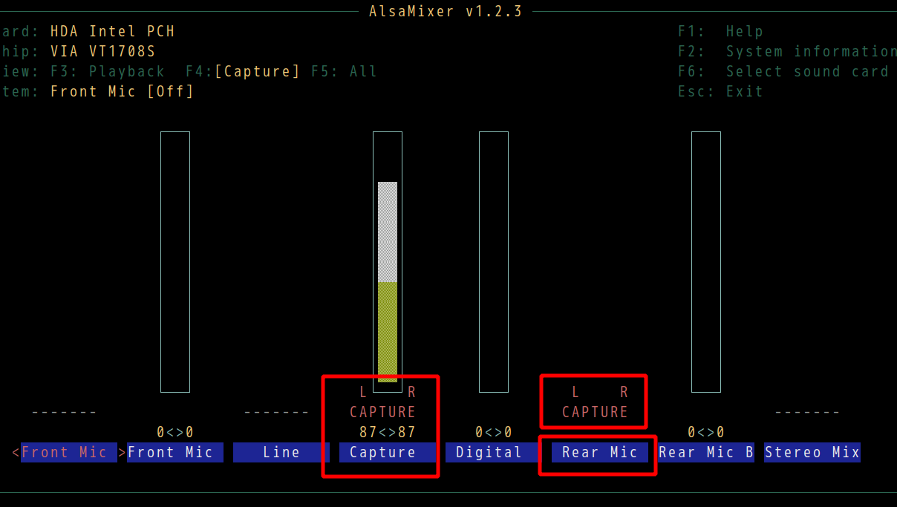

Emacs 28.1 on Debian Linux
As a happy Emacs 27 user on Debian Linux, I plan to use both Emacs 28.1 and Emacs 27 and gradually migrate from Emacs 27 to Emacs 28.
So I installed Emacs 28.1 without X Window System Support (emacs-nox) and it only runs in daemon mode.
Here are the steps,
- Compare PKGBUILD of emacs-nox 27 and PKGBUILD of emacs-nativecomp 28 to get the difference of build script (I was more familiar with Arch Linux. You can use Gentoo Linux's website to collect information)
- The only missing third party package is
libgccjit. Runsudo apt install libgccjit-12-devto install it - Download Emacs 28.1 source code, run below command in shell,
cd ~/Downloads/emacs-28.1 && mkdir -p ~/myemacs/28.1 && rm -rf ~/myemacs/28.1/* && ./configure CFLAGS=-no-pie --prefix=~/myemacs/28.1 --without-x --without-sound --with-modules --with-native-compilation --without-compress-install && make && make install
- After installation, run "~/myemacs/28.1/bin/emacs" and Emacs will compile the packages automatically (I watched a few youtube videos until the compilation finished)
- Create "~/.config/systemd/user/emacs.service" with below content ("/home/cb" is my HOME directory),
[Unit]
Description=Emacs text editor
Documentation=info:emacs man:emacs(1) https://gnu.org/software/emacs/
[Service]
Type=forking
ExecStart=/home/cb/myemacs/28.1/bin/emacs -Q --daemon -l "/home/cb/.emacs.d/init.el" --eval "(progn (require 'server) (server-start))"
ExecStop=emacsclient --eval "(kill-emacs)"
Environment=SSH_AUTH_SOCK=%t/keyring/ssh
Restart=on-failure
[Install]
WantedBy=default.target
- Run
systemctl --user restart emacs.servicein shell - Done! Run
emacsclientto enjoy Emacs 28.1.
2.1 disable "idle loader" in server mode
I use "idle loader" in my Emacs distribution. Obviously it need be disabled in server mode.
Here is the code,
(defvar my-disable-idle-timer (daemonp)
"If not nil, Function passed to `my-run-with-idle-timer' is run immediately.")
(defun my-run-with-idle-timer (seconds func)
"After SECONDS, run function FUNC once."
(cond
(my-disable-idle-timer
(funcall func))
(t
(run-with-idle-timer seconds nil func))))
2.2 Shell script to install Emacs
You could Use below script "install-emacs.sh" to install Emacs,
#!/bin/sh
[ -z "$EMACS_VERSION" ] && echo "Usage: EMACS_VERSION=25.1 install-emacs.sh or EMACS_VERSION=snapshot install-emacs.sh" && exit 1
[ -z "$EMACS_URL" ] && EMACS_URL="http://mirror.aarnet.edu.au/pub/gnu/emacs/"
# I've assign 12G memory to /tmp as ramdisk
[ -z "$EMACS_TMP" ] && EMACS_TMP="/tmp"
if [ "$EMACS_VERSION" != "snapshot" ]; then
echo "curl $EMACS_URL/emacs-$EMACS_VERSION.tar.gz"
curl $EMACS_URL/emacs-$EMACS_VERSION.tar.gz | tar xvz -C $EMACS_TMP
fi
# @see http://wiki.gentoo.org/wiki/Project:Emacs/GNU_Emacs_developer_guide
# @see http://packages.gentoo.org/package/app-editors/emacs for info on Gentoo Linux
# --without-gtk and --without-gtk3 is optional
echo "Installing Emacs ..."
if [ "$EMACS_VERSION" = "snapshot" ]; then
cd $HOME/projs/emacs && mkdir -p $HOME/myemacs/snapshot && rm -rf $HOME/myemacs/snapshot/* && ./autogen.sh && ./configure CFLAGS=-no-pie --prefix=$HOME/myemacs/snapshot --without-x --without-dbus --without-sound --with-gnutls=no && make && make install
echo "Emacs snapshot was installed!"
elif [ "$EMACS_VERSION" = "28.1" ]; then
cd $EMACS_TMP/emacs-$EMACS_VERSION && mkdir -p $HOME/myemacs/$EMACS_VERSION && rm -rf $HOME/myemacs/$EMACS_VERSION/* && ./configure CFLAGS=-no-pie --prefix=$HOME/myemacs/$EMACS_VERSION --without-x --without-sound --with-modules --with-native-compilation --without-compress-install && make && make install
else
cd $EMACS_TMP/emacs-$EMACS_VERSION && mkdir -p $HOME/myemacs/$EMACS_VERSION && rm -rf $HOME/myemacs/$EMACS_VERSION/* && ./configure CFLAGS=-no-pie --prefix=$HOME/myemacs/$EMACS_VERSION --without-x --without-sound --with-modules && make && make install
rm -rf $EMACS_TMP/emacs-$EMACS_VERSION
echo "Emacs $EMACS_VERSION was installed!"
fi
Start teamviewer on i3wm
See yveslec's analysis.
So the solution is just one liner in shell.
ssh -X 127.0.0.1 "DISPLAY=:0.0 teamviewer"
Here is my shell script "~/bin/sshx-teamviewer.sh" with a bit optimization,
#!/bin/sh
# Run "cat ~/.ssh/id_rsa.pubkey >> ~/.ssh/authorized_keys" to
# avoid inputting ssh login password
ssh -X -C 127.0.0.1 "DISPLAY=:0.0 teamviewer"
蒜苔炒蛋
要点,
- 蒜苔老的头掐掉, 开水焯一下后放入冷水,从中间撕成两半,切成四公分的段.
- 滚刀切葱段备用
- 炒蛋核桃块大小, 三分盐
- 油热后加葱和少许海鲜酱油.炒几下后加入蒜苔加盐花椒油翻炒
- 加蛋翻炒几下,略勾芡
注: 没有花椒油,所以我在油温较高时和葱段一起加入少许花椒粒,利用油温爆出花椒香味.
麻婆豆腐
视频教程见大师的菜 麻婆豆腐.
要点,
- 豆腐要嫩, 过开水去豆腥味, 加盐提味,一点酱油提色
- 牛肉末炒酥取出
- 加豆瓣酱,豆豉,辣椒面等.不能加姜,会压住其他味.炒到发香.加肉末,加高汤
- 汤最多到豆腐的50%
- 用炒勺的背面推豆腐保持豆腐完整
- 三次勾芡(第一次让味进入豆腐,第二次起到拉力作用,第三次彻底粘合,不要吐水出来)
- 最后用小火甚至微火,多烧一下才入味(要不断推豆腐,否则豆腐沾锅底)
- 起锅前加入蒜苗, 少许花椒粒烤热后磨成粉撒入
Set up vmtouch systemd service
"/etc/default/vmtouch" on Debian Testing,
# Change to yes to enable running vmtouch as a daemon
ENABLE_VMTOUCH=yes
# User and group to run as
VMTOUCH_USER_GROUP=cb:cb
# Whitespace separated list of files and directories for vmtouch to operate on
VMTOUCH_FILES="/home/cb/.emacs.d/lisp /home/cb/.emacs.d/elpa /home/cb/.emacs.d/site-lisp /home/cb/.mozilla/firefox/linux.default/*.sqlite /home/cb/.mozilla/firefox/linux.default/*.json"
# Options to pass to vmtouch itself. See vmtouch(8).
VMTOUCH_OPTIONS="-q -t"
Run sudo systemctl restart vmtouch to restart the service.
"home/cb.emacs.d" is not touched because the package elpy will create a sub-directory "elpy" there. This sub-directory is huge. It contains many python libraries.
Org link and pdf-tools
By default, Org pdf link uses doc-view.el to open pdf. So if you move focus over the link docview:papers/last.pdf::NNN in a org file and run M-x org-open-at-point, API doc-view-goto-page is called.
These days pdf-tools is very popular.
If pdf-tools is installed and enabled, API call of doc-view-goto-page will fail.
Below code fixes this problem. It will automatically call correct API with or without pdf-tools.
(defun my-org-docview-open-hack (orig-func &rest args)
(let* ((link (car args)) path page)
(string-match "\\(.*?\\)\\(?:::\\([0-9]+\\)\\)?$" link)
(setq path (match-string 1 link))
(setq page (and (match-beginning 2)
(string-to-number (match-string 2 link))))
(org-open-file path 1)
(when page
(cond
((eq major-mode 'pdf-view-mode)
(pdf-view-goto-page page))
(t
(doc-view-goto-page page))))))
(advice-add 'org-docview-open :around #'my-org-docview-open-hack)
Use Magit to commit efficiently and correctly
I prefer using git cli because it's more light weight.
Here is my bash alias of git commit,
alias gc="git commit -m"
The problem of my "cli-only" workflow is it can't detect my mistakes automatically.
I often forget to add new code file into git. So my final commit might miss files.
Magit UI solution
One solution is to use Magit to commit inside Emacs. After commit, I could double check the files inside the hooks provided by Magit.
My set up in Emacs,
(defun my-lines-from-command-output (command)
"Return lines of COMMAND output."
(let* ((output (string-trim (shell-command-to-string command)))
(cands (nonempty-lines output)))
(delq nil (delete-dups cands))))
(defun my-hint-untracked-files ()
"If untracked files and commited files share same extension, warn users."
(let* ((exts (mapcar 'file-name-extension (my-lines-from-command-output "git diff-tree --no-commit-id --name-only -r HEAD")))
(untracked-files (my-lines-from-command-output "git --no-pager ls-files --others --exclude-standard"))
(lookup-ext (make-hash-table :test #'equal))
rlt)
;; file extensions of files in HEAD commit
(dolist (ext exts)
(puthash ext t lookup-ext))
;; If untracked file has same file extension as committed files
;; maybe they should be staged too?
(dolist (file untracked-files)
(when (gethash (file-name-extension file) lookup-ext)
(push (file-name-nondirectory file) rlt)))
(when rlt
(message "Stage files? %s" (mapconcat 'identity rlt " ")))))
(with-eval-after-load 'magit
(defun my-git-check-status ()
"Check git repo status."
;; use timer here to wait magit cool down
(run-with-idle-timer 1 nil #'my-hint-untracked-files))
(add-hook 'magit-post-commit-hook #'my-git-check-status)
(add-hook 'git-commit-post-finish-hook #'my-git-check-status))
Screenshot of step 1 in Emacs,
Screenshot of step 2 (final step) in Emacs (I was reminded of untracked files "bye.js" and "tree.js" at the bottom of UI),
BTW, my actual code in my .emacs.d is a bit different.
CLI solution
Another solution is doing the git thing in shell plus Emacs "-batch" option.
Here is my bash setup,
function gc {
# check my emacs.d exist
if [ -f "$HOME/.emacs.d/README.org" ] && [ "$PWD" != "$HOME/.emacs.d" ]; then
# magit hook does not work
git commit -m "$@" && emacs -batch -Q -l "$HOME/.emacs.d/init.el" --eval "(my-hint-untracked-files)"
else
git commit -m "$@"
fi
}
Please note running magit-commit-create in cli won't work. It's because magit-run-git-async in called and it might lock the git after the cli execution.
Screenshot in shell,

Linux audio input configuration
Run sudo alsamixer and press "F4" to choose audio input.
Make sure the right "Rear Mic" and "Capture" are enabled, 
Run alsamixer and check "pulseaudio" configuration in the same way.
Then test audio,
arecord --duration=5 --format=dat test-mic.wav && aplay test-mic.wav
Hardcore spell checking in Emacs
This article is not introduction of Emacs spell checking basics. It requires deep knowledge of Emacs Lisp and Fly Spell.
You could read my article What's the best spell check setup in emacs for basic knowledge.
This article introduces new techniques to make Fly Spell more powerful and faster.
The CLI programs aspell and hunspell can only parse plain text. They don't know any programming language syntax.
Fly Spell feeds the output of CLI program into its own Lisp predicate named flyspell-generic-check-word-predicate whose default value is nil.
When executing (flyspell-mode 1), the per mode predicate is assigned to flyspell-generic-check-word-predicate.
For example, you can run (get major-mode 'flyspell-mode-predicate) to get predicate of current major mode, (get 'web-mode 'flyspell-mode-predicate) to get predicate of web-mode.
The predicate is a simple function without parameter. Here is my predicate for web-mode,
(defun my-web-mode-flyspell-verify ()
"Fly Spell predicate of `web-mode`."
(let* ((font-face-at-point (get-text-property (- (point) 1) 'face))
rlt)
;; If rlt is t, the word at point is POSSIBLY a typo, continue checking.
(setq rlt t)
;; if rlt is nil, the word at point is definitely NOT a typo.
;; (setq rlt nil)
rlt))
;; Attach my predicate to `web-mode`
(put 'web-mode 'flyspell-mode-predicate 'my-web-mode-flyspell-verify)
If you read code of flyspell-prog-mode, you will find it set flyspell-generic-check-word-predicate to its own predicate flyspell-generic-progmode-verify,
(defvar flyspell-prog-text-faces
'(font-lock-string-face font-lock-comment-face font-lock-doc-face)
"Faces corresponding to text in programming-mode buffers.")
(defun flyspell-generic-progmode-verify ()
"Used for `flyspell-generic-check-word-predicate' in programming modes."
(unless (eql (point) (point-min))
;; (point) is next char after the word. Must check one char before.
(let ((f (get-text-property (1- (point)) 'face)))
(memq f flyspell-prog-text-faces))))
As you can see, flyspell-generic-progmode-verify is very simple. If the word at point is not inside comment or string, the predicate returns nil which means the word is not a typo.
So in theory I can write my own predicate by following flyspell-generic-progmode-verify.
But in reality it's not as simple as it seems. The predicate is written in Lisp so it's slow. If it contains too much code, Fly Spell process might block other actions in Emacs. Emacs could be un-responsive when editing text.
The solution is not to start Fly Spell process too frequently.
The flyspell-mode starts checking when text in current buffer is modified.
My solution is not to turn on flyspell-mode. Instead, I manage the spell checking by myself using APIs from flyspell.
I only spell check when user saving current buffer. The interval between spell check should not be less than 5 minutes. Spell check is done by calling API flyspell-buffer
Checking the whole buffer is still slow. Instead, we can check the text region in current window by calling flyspell-region instead. The api window-total-height returns the height of current Windows. So I can use below code to get the region to check,
(let* (beg end (orig-pos (point)))
(save-excursion
(forward-line (- (window-total-height)))
(setq beg (line-beginning-position))
(goto-char orig-pos)
(forward-line (window-total-height))
(setq end (line-end-position)))
(flyspell-region beg end))
I also need respect the predicate embedded in the major mode in my own generic predicate. Since per mode predicate has already checked the font face, I should skip the font face check in generic predicate if per mode predicate exists.
Above algorithms are implemented in wucuo.
Usage,
(add-hook 'prog-mode-hook 'wucuo-start)
(add-hook 'text-mode-hook 'wucuo-start)
If wucuo-flyspell-start-mode is "fast" (default value), flyspell-region is used, visible region is checked when user saves current file.
If wucuo-flyspell-start-mode is "normal", flyspell-buffer is used, current buffer is checked when user saves current file.
Audio recording on Linux
- Run
sudo alsamixerand turn off mic to reduce the noise - Run
alsamixerto double check pulse setup - Make sure correct device is selected in audacity
- Restart
audacityand test
My alsamixer setup,